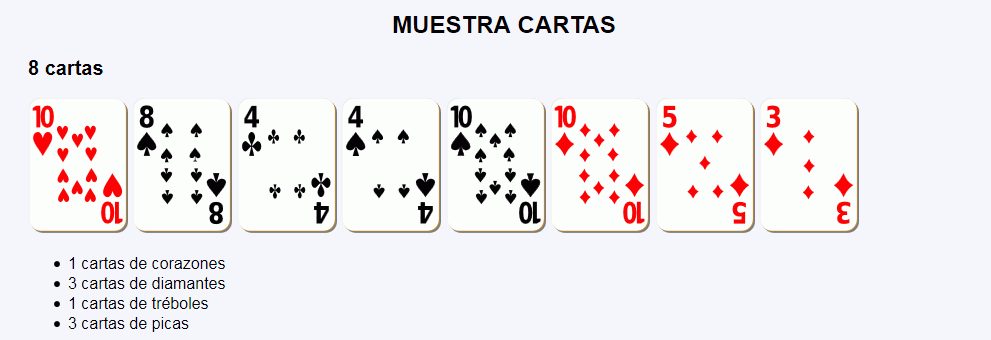
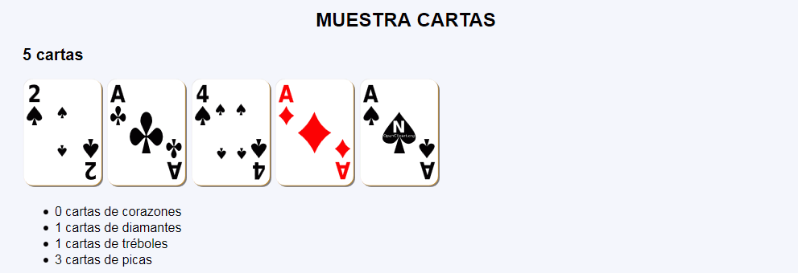

Exámenes - Muestra cartas
En este ejercicio se debe crear un programa que muestre un número de cartas de la baraja francesa. Además, el programa señalará cuántas cartas hay de cada palo.
Muestra cartas - Comentarios
- El programa tendrá una sola página:
- Se mostrará un número de cartas al azar entre 3 y 12.
- Los números de cartas serán entre 1 y 10, al azar.
- Se indicará en una lista cuántas cartas hay de cada palo.
- Al actualizar la página, se mostrará un número de cartas distinto.
- Capturas de pantalla de ejemplo:

